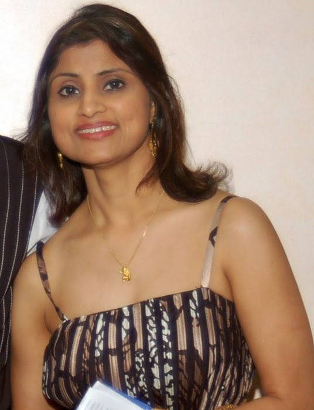

About Me

Divya Jain is currently a web developer in-training and also head of Steps-2-Fit, a non-profit intended to build community and empower youth. Divya has a Master's degree in Biosciences and Classical Dance. She was previously the founder and CEO of Creations Dance Academy, teaching Indian classical dance. Divya would like to use her degree to get a job in web development, either at a company or as a freelance developer. She is skilled in HTML, CSS, and a number of other languages..
Connect with me